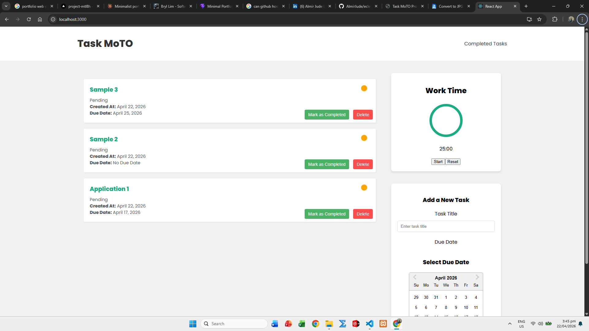
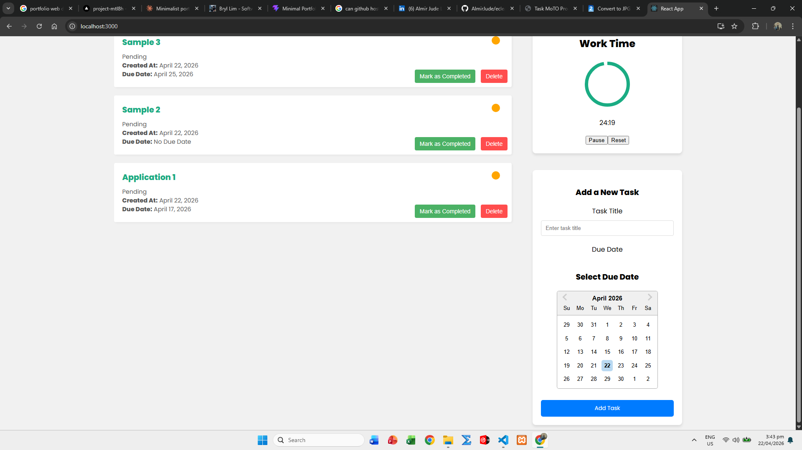
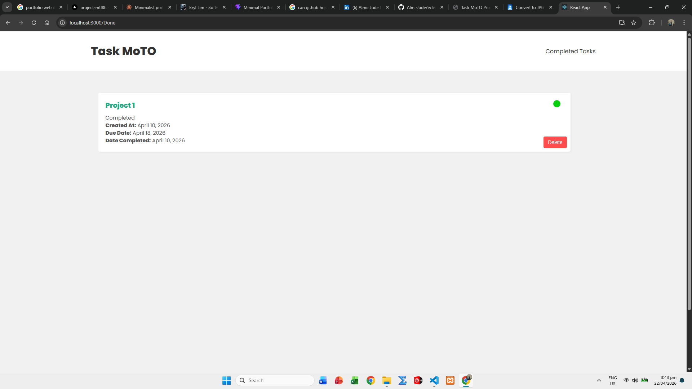

Task MoTO Productivity Tracker
A full-stack task management web app with planning, Pomodoro timing, and clear separation of active versus completed work.
Gallery



Actual screenshots from the Task MoTO Productivity Tracker.
Tech Stack
ReactNode.jsExpressMongoDB
Highlights
- Implemented RESTful APIs for task CRUD and progress workflows.
- Integrated time-boxed focus sessions to improve productivity habits.
- Built focused UI views to reduce clutter and improve daily planning.